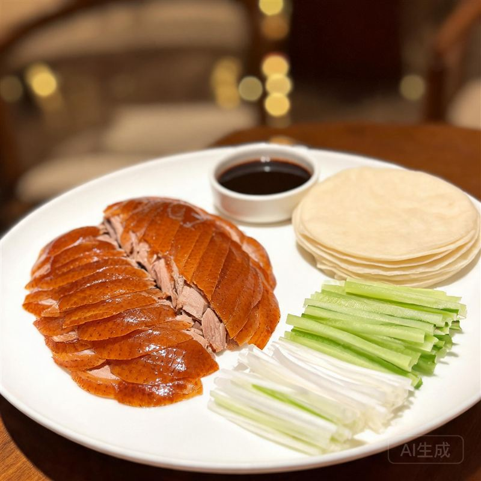
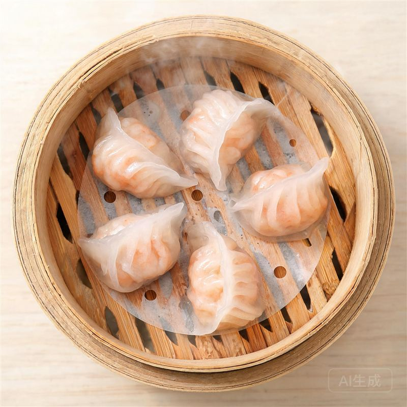

宫保鸡丁
鸡丁滑嫩、花生酥脆，干辣椒与糖醋汁在锅里碰出酸甜微辣的平衡，是川菜走出国门的第一张名片。
左右滑动切换四道菜 · 短距误触不切换 · 快速连滑不跳页 · 纵向仍可滚动
鸡丁滑嫩、花生酥脆，干辣椒与糖醋汁在锅里碰出酸甜微辣的平衡，是川菜走出国门的第一张名片。
豆腐嫩而不散，红油裹着肉末，花椒在舌尖上跳舞——"麻、辣、烫、香、酥、嫩、鲜、活"八字俱全。

京菜枣红色的鸭皮蘸糖入口即化，薄饼卷上葱丝甜面酱，一只鸭子里藏着整座京城的老味道。

粤式点心澄面皮薄得透出虾仁的粉红，十二褶捏出月牙弯弯，一口咬下满是大海的鲜甜弹牙。
← 在卡片上左右滑动试试 →
手机实拍：左右滑动切换美食卡片，跟手位移、方向锁定与 40px 阈值判定全部生效。